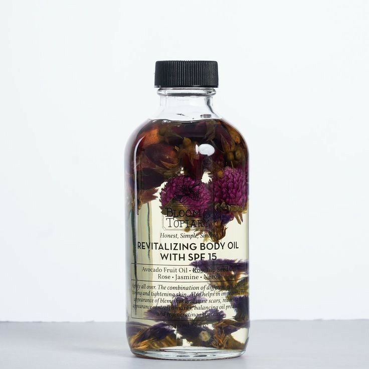
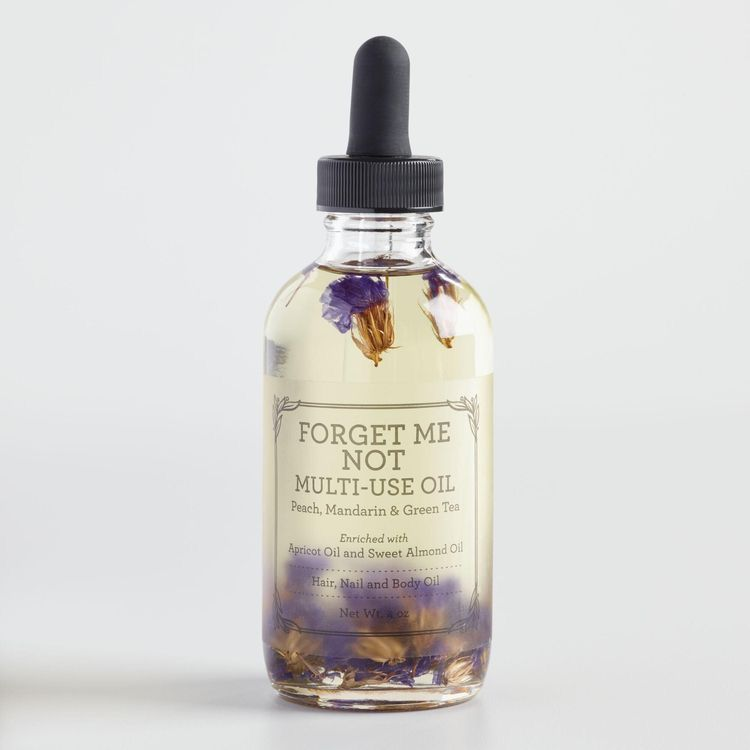
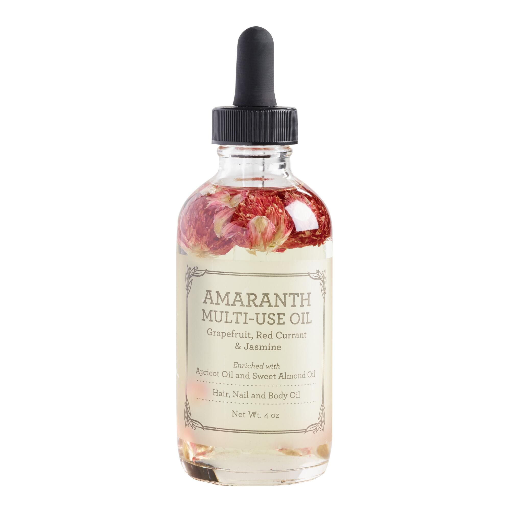
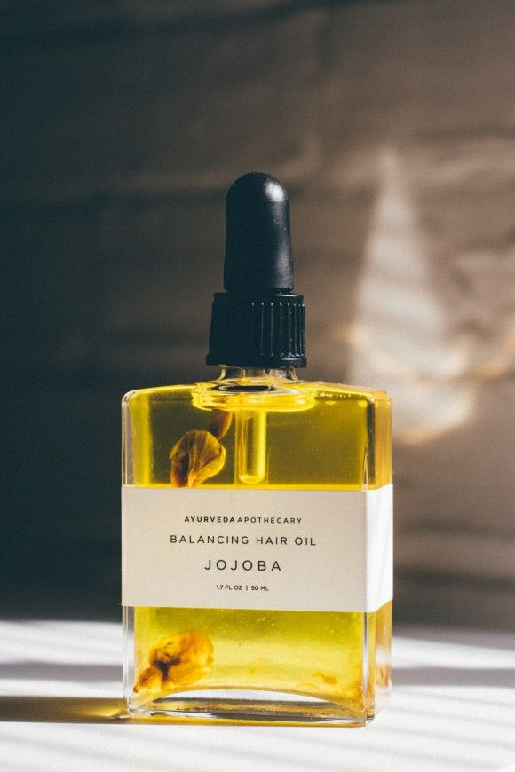
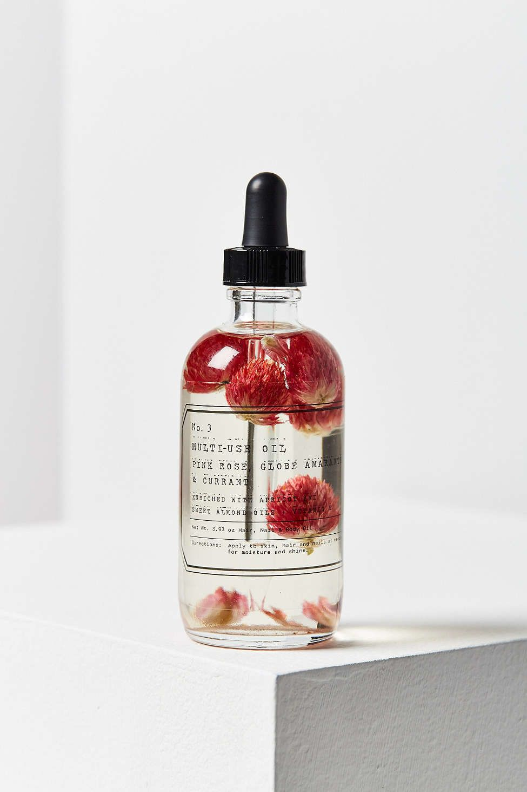

Serums naturales
Nuestros aceites faciales son 100% naturales y no contienen químicos agresivos ni sintéticos. Esto significa que puedes confiar en que estás proporcionando a tu piel los nutrientes que necesita sin exponerla a sustancias dañinas o irritantes.
Además, nuestros aceites faciales están diseñados para satisfacer las necesidades específicas de tu piel. Ofrecemos diferentes mezclas para diferentes tipos de piel, desde pieles secas y maduras hasta pieles grasas y propensas al acné. Cada mezcla de aceites está formulada con ingredientes específicos para proporcionar los beneficios que tu piel necesita.
También es importante destacar que nuestros aceites faciales son altamente efectivos. La combinación de aceites vegetales y esenciales en nuestras mezclas proporciona una hidratación profunda y duradera que deja la piel suave y flexible. Además, nuestros aceites pueden ayudar a reducir la apariencia de líneas finas y arrugas, mejorar la elasticidad de la piel y reducir la inflamación.
En Zenblends, nos enorgullece ofrecer productos éticos y sostenibles. Todos nuestros productos son veganos y libres de crueldad animal, lo que significa que no utilizamos productos de origen animal en nuestras formulaciones ni probamos nuestros productos en animales.
Variedades para elegir

Serum de palta, rosas y jazmines
Nuestra fórmula contiene aceites de palta, rosa y jazmín, conocidos por sus propiedades hidratantes, suavizantes y regenerativas. Este serum te ayudará a nutrir y proteger tu piel, mejorando su apariencia general para un look más saludable y radiante.
excelente para nutrir y proteger la piel

Serum de mandarina, durazno y te verde
Elaborado con aceites de mandarina, durazno y té verde, este serum es una fuente natural de antioxidantes y vitaminas. Nuestra fórmula ayuda a hidratar la piel, mejorar su elasticidad y tonificarla.
perfecto para una piel mas tonificada e hidratada

Serum de durazno y almendra
Elaborado con aceites de durazno y almendra, esta fórmula es rica en vitaminas y antioxidantes. Ayuda a hidratar la piel, mejorar su textura y prevenir la aparición de arrugas y líneas finas. Nuestro serum facial es suave y ligero, perfecto para cualquier tipo de piel.
excelente para prevenir la aparicion de arrugas

Serum de jojoba
La fórmula ligera y de rápida absorción ayuda a hidratar y nutrir la piel, equilibrar la producción de aceite y reducir la apariencia de arrugas y líneas finas. El aceite de jojoba es rico en antioxidantes y vitaminas, ayudando a proteger la piel de los daños ambientales.
controla la produccion de sebo

Serum de rosas y amaranto
La fórmula única combina los beneficios hidratantes y rejuvenecedores de los aceites de rosa y amaranto. Rica en antioxidantes y vitaminas, nuestra fórmula ayuda a suavizar la piel, reducir la apariencia de arrugas y líneas finas, y mejorar la elasticidad de la piel. Con su aroma suave y delicado, nuestro serum facial es una experiencia de cuidado de la piel relajante y rejuvenecedora.
excelente para todo tipo de piel y deja un aroma suave
Sobre nuestros serums
Transforma tu piel con nuestro serum facial. Descubre los secretos de la naturaleza con nuestras fórmulas únicas de aceites naturales y antioxidantes que nutren y protegen tu piel, reduciendo la apariencia de arrugas y líneas finas, mejorando la textura y elasticidad, y dejando una piel suave y radiante. Nuestro serum facial es una experiencia de cuidado de la piel de lujo que te llevará en un viaje de aromas suaves y delicados. Encuentra el serum que mejor se adapte a tu piel y únete a la revolución del cuidado de la piel natural. ¡Compra ahora y siente la diferencia!
Serum de palta, rosas y jazmines
Nuestra fórmula contiene aceites de palta, rosa y jazmín, conocidos por sus propiedades hidratantes, suavizantes y regenerativas. Este serum te ayudará a nutrir y proteger tu piel, mejorando su apariencia general para un look más saludable y radiante.
excelente para nutrir y proteger la pielSerum de mandarina, durazno y te verde
Elaborado con aceites de mandarina, durazno y té verde, este serum es una fuente natural de antioxidantes y vitaminas. Nuestra fórmula ayuda a hidratar la piel, mejorar su elasticidad y tonificarla.
perfecto para una piel mas tonificada e hidratadaSerum de durazno y almendra
Elaborado con aceites de durazno y almendra, esta fórmula es rica en vitaminas y antioxidantes. Ayuda a hidratar la piel, mejorar su textura y prevenir la aparición de arrugas y líneas finas. Nuestro serum facial es suave y ligero, perfecto para cualquier tipo de piel.
excelente para prevenir la aparicion de arrugasSerum de jojoba
La fórmula ligera y de rápida absorción ayuda a hidratar y nutrir la piel, equilibrar la producción de aceite y reducir la apariencia de arrugas y líneas finas. El aceite de jojoba es rico en antioxidantes y vitaminas, ayudando a proteger la piel de los daños ambientales.
controla la produccion de seboSerum de rosas y amaranto
La fórmula única combina los beneficios hidratantes y rejuvenecedores de los aceites de rosa y amaranto. Rica en antioxidantes y vitaminas, nuestra fórmula ayuda a suavizar la piel, reducir la apariencia de arrugas y líneas finas, y mejorar la elasticidad de la piel. Con su aroma suave y delicado, nuestro serum facial es una experiencia de cuidado de la piel relajante y rejuvenecedora.
excelente para todo tipo de piel y deja un aroma suaveSobre nuestros serums
Transforma tu piel con nuestro serum facial. Descubre los secretos de la naturaleza con nuestras fórmulas únicas de aceites naturales y antioxidantes que nutren y protegen tu piel, reduciendo la apariencia de arrugas y líneas finas, mejorando la textura y elasticidad, y dejando una piel suave y radiante. Nuestro serum facial es una experiencia de cuidado de la piel de lujo que te llevará en un viaje de aromas suaves y delicados. Encuentra el serum que mejor se adapte a tu piel y únete a la revolución del cuidado de la piel natural. ¡Compra ahora y siente la diferencia!